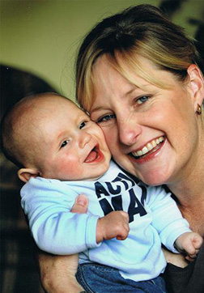

I'm a full time mother of two living on a lifestyle block South of Auckland with my husband, two children, two cats, two horses and two chickens.. I've spent my years between rural and city living and love both just the same. I started the Handee Signs business out of concern when I started looking for signs for our driveway. I was shocked to learn about the high level of driveway accidents involving children under ten years old in NZ. When I researched the market for trigger signs to remind drivers to look out for children around driveways and garages, I was surprised at the lack of material available. It was then that I decided to do something about it and so Handee Signs was born. My goal is to get as many Kiwi's behind driveway safety awareness as possible.